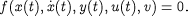
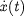
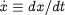

We consider processes described by mixed differential and algebraic equations of the form:

Here x(t) and y(t) are the differential and algebraic variables in the model while  are the time derivatives of the x(t) (i.e., ). u(t) are the control variables and v the time invariant parameters to be determined by the optimisation. In the context of the batch reactor example considered earlier, the differential variables will typically correspond to fundamental conserved quantities (such as molar component holdups and internal energy), while y will include various quantities related to them (e.g. component molar concentrations and temperature). The input flowrates of A, B and cooling water are the control variables u while, in the design case, the volume of the reactor acts as a time invariant parameter v.
For simplicity, the mathematical description in this document assumes that the system behaviour is defined in terms of ordinary(with respect to time) differential and algebraic equations. However, the optimisation capabilities of gPROMS are equally applicable to mixed lumped and distributed systems described by general integral, partial differential and algebraic equations in time and one or more space dimensions.